原文连接:https://www.cnblogs.com/dwvfw855/p/10874690.html
1.JavaScript数据类型
Undefined
Null
Boolean
Number
String
typeof 运算符
typeof 是一个一元运算符，放在一个运算数之前，运算数可以是任意类型. 它返回值是一个字符串，该字符串说明运算数的类型.
typeof是一个一元运算符（就像++，--，！，- 等一元运算符），不是一个函数，也不是一个语句.
typeof "a"
数据类型 - Undefined
Undefined即⼀一个特殊的值，当⼀一个变量量声明但 未初始化时，就会被赋予undefined值。
<script>
`var message;`
`console.log(message);`
`</script>`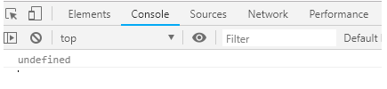

数据类型 - Null
空对象指针 当⼀一个变量量是为了了保存⼀一个对象，但没办 法⽴立即初始化的时候，应该为之分配⼀一个 null 值。
数据类型 - Boolean
在 JavaScript 中，布尔值是一种基本的数据类型。Boolean 对象是一个将布尔值打包的布尔对象。Boolean 对象主要用于提供将布尔值转换成字符串的 toString() 方法。
转换规则
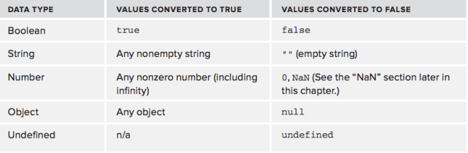

数据类型 - Number & String
NaN 任何涉及NaN的操作（NaN + 1）都会返回NaN NaN与任何值都不不相等，包括NaN本身
数据类型转化
Number() parseInt() parseFloat() String() toString
数据类型 - Object
创建Object实例
var o=new Object();
var O =new Object
Object类型所具有的任何属性和⽅方法也同样存 在于更更具体的对象中
constructor
hasOwnProperty(propertyName)
isPrototypeOf(object)
propertyIsEnumerable(propertyName)
toLocaleString()
toString()
valueOf()
2.JavaScript运算符
一元运算符 布尔运算符 相等运算符 其他运算符
运算符 - ⼀一元运算符
++, --
+,-
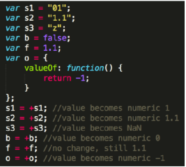

运算符 - 布尔运算符
!! ：即 Boolean() && ： 短路路操作（if-else） || ： 默认值（var a = b || 1;）
相等运算符
相等 （==、!=） vs 全等（===、!==）
-
相等和不相等(‘==’ ,’!=’)特点：先转换再比较
-
全等和不全等（’===’ , ‘!==’）特点：仅比较而不转换
相同数据类型比较规则： ==：如果两个操作数相等，返回true，不相等返回false !=：如果两个操作数不相等，返回true，相等返回false
不同数据类型比较规则： 如果有一个操作数是布尔值，则比较相等前先转换为数值：false->0,true->1; 如果一个操作数是字符串，另一个操作数是数值，则再比较相等性前先将字符串转换为数值； 如果一个操作数是对象，另一个不是，则调用对象的valueOf（）方法，用得到的基本类型按照上面的规则进行比较；
特殊： null 和 undefined是相等的 null == undefined //true
在 比较相等性之前，不能将null和undefined转换成其他任何值
如果有一个操作数是NaN，则相等操作符返回false。即使两个操作数都是NaN，相等操作符也返回false NaN == NaN //false
如果两个操作数都是对象，则比较它们是不是同一个对象。如果两个操作数都指向同一个对象，则相等操作符返回 true ；否则，返回 false 。
全等操作符相比相等操作符在数据比较时更为严格，数据比较之前不做处理 除了在比较之前不转换操作数之外，全等和不全等操作符与相等和不相等操作符没什么区别
其他
位运算符 (~, &, |, ^, <<, >>, >>>) 乘性运算符 (*, /, %) 加性运算符 (+, -) 关系运算符 (>, >=, <=, <) 条件运算符 (?:) 赋值运算符 (=) 逗号运算符 (,)
3.JavaScript语句
表达式语句 流控制语句 返回值问题
表达式语句
语句 - 表达式语句
一般表达式语句

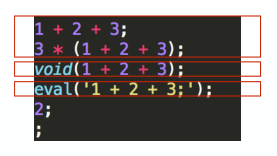
赋值语句
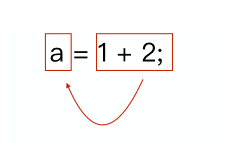

声明语句
var a = 1 + 2;
声明语句和赋值语句的区别
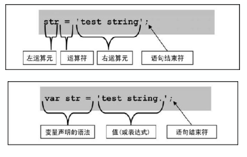

函数调⽤用语句
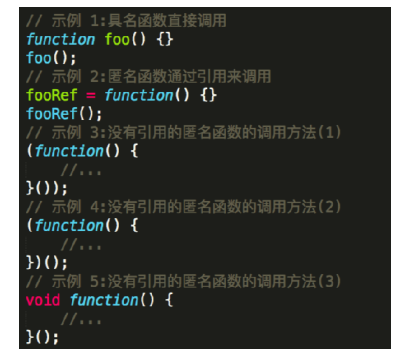
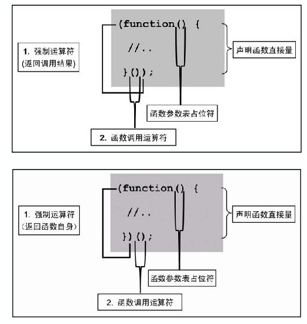


流控制语句
语句- for-in
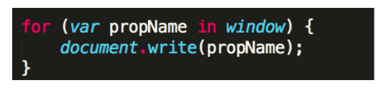

语句 - 其他
if
do-while
while
for
break/continue
switch
语句- 异常
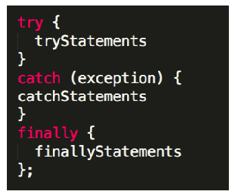

try语句允许我们定义在执行时进行错误测试的代码块。
catch 语句允许我们定义当 try 代码块发生错误时，所执行的代码块。
finally 语句在 try 和 catch 之后无论有无异常都会执行。
语句- 返回值
无返回值的语句
function a() {}
a();
4.JavaScript函数
函数的参数 ECMAScript中的参数都是值传递 重载
函数 - 参数
“像” 数组 arguments.length (取决于传⼊入参数的个数)
1、什么是arguments？
这个函数体内的arguments非常特殊，实际上是所在函数的一个内置类数组对象，可以用数组的[i]和.length。
2、有什么作用？
js语法不支持重载！但可用arguments对象模拟重载效果。
arguments对象：函数对象内，自动创建的专门接收所有参数值得类数组对象。 arguments[i]: 获得传入的下标为i的参数值
函数 - 值传递
原始值: 复制变量
var num1 = 5; var num2 = num1;
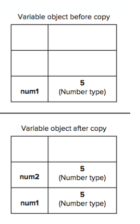

函数 - 值传递
复制引用
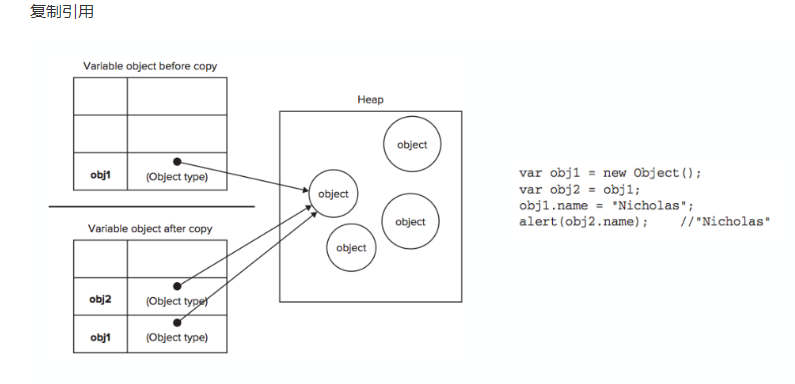

函数 - 值传递
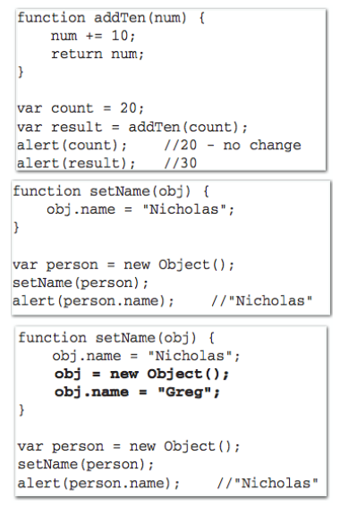

函数 - 重载(js没有重载)
使⽤用模拟函数重载来编写⼀一个具有如下 功能的函数：
1，如果输⼊入参数⼤大于三个，返回最后⼀一个参数。
2，如果输⼊入参数⼩小于三个且全部为数字，则返 回排序后的数组，如果最后⼀一个数为奇数则降序 排列列，反之升序排列列。
3，如果输⼊入参数⼩小于三个且包含字符串串，则将 所有参数强制转化为字符串串联接返回。
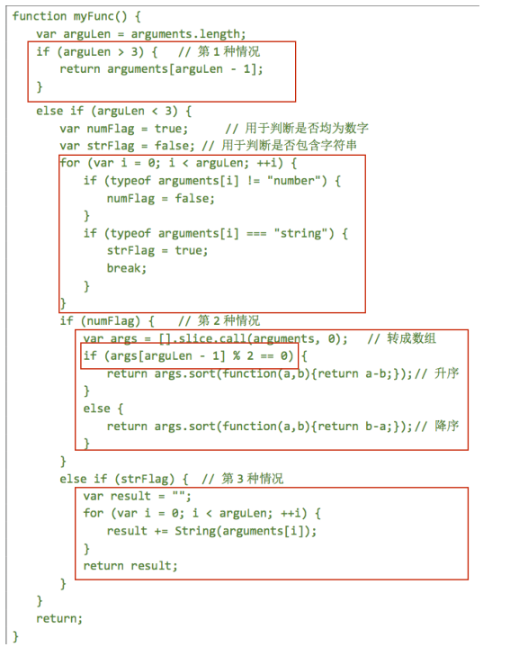